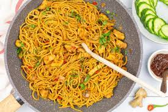
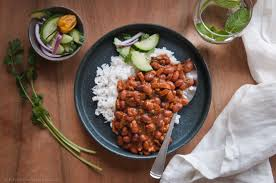

O Satay consiste em um espeto de carne, que pode ser feito a partir de frango, boi ou mesmo porco.

Bami
O Bami se assemelha bastante a um espaguete e é misturado a um molho escuro, que conta com frango frito e pimenta sambal.

Bruine Bonen
O prato em questão é feito a partir de feijões vermelhos. O preparo do bruine bonen se dá da seguinte forma: os feijões são fervidos e, posteriormente, o frango frito é adicionado a eles.